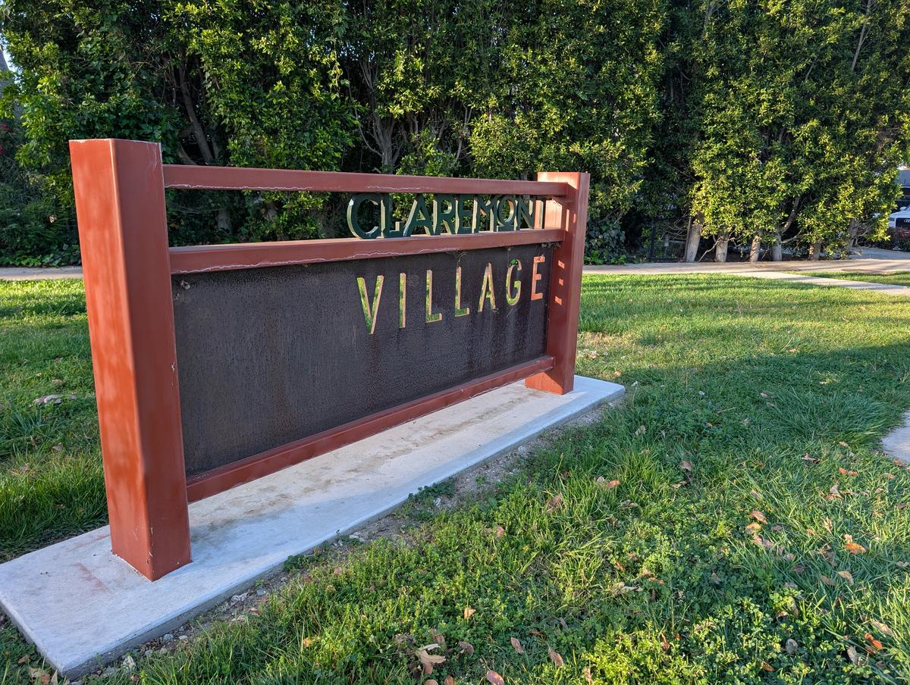
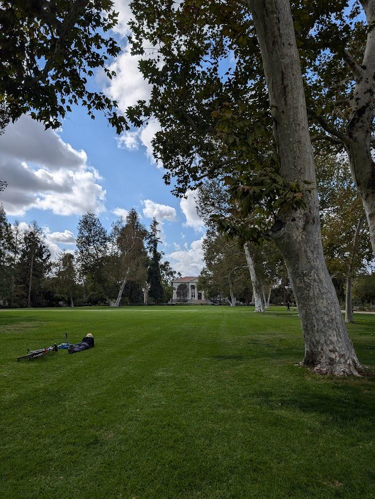
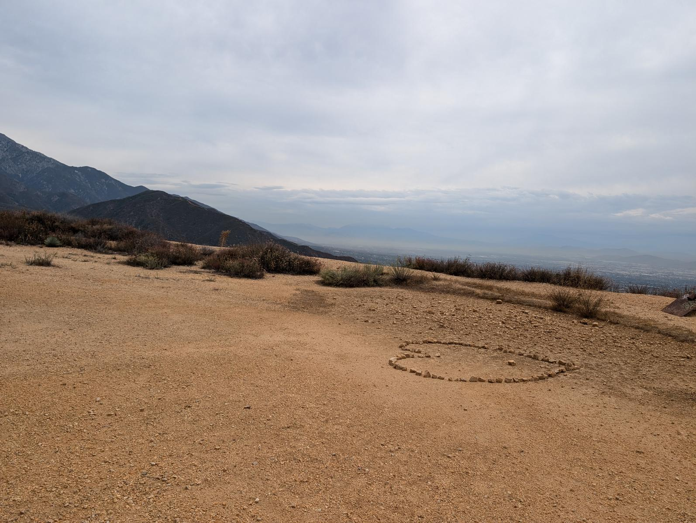

Welcome to Claremont
Nestled at the base of the San Gabriel Mountains, Claremont, California is a rare gem — a walkable, tree-canopied college town just 30 miles east of Los Angeles with a personality all its own.
Looking for things to do in Claremont? From jacaranda-purple springs to golden-hour hikes above the foothills, from locally roasted coffee in the Village to world-class art at the colleges — Claremont feels like a small town that somehow has everything. Whether you're planning a visit, exploring as a student, or considering a move, this is your local guide to the best of Claremont CA.

Claremont Village
A walkable downtown with character you can't fake
What It Is
A tree-lined, walkable downtown where everything is independently owned — no chains, no big-box stores. Boutiques, restaurants, cafes, galleries, and string-lit patios packed into a few charming blocks. It's the heart of Claremont. Learn more about Claremont Village.
The Packing House
A converted citrus packing house just east of the Village core, now home to vintage shops, food spots, and creative studios. A destination within the destination.
Good to Know
Free street parking everywhere. The Metrolink station, City Hall, the Claremont Post Office, and the Claremont Helen Renwick Library are all within a few blocks. Everything's walkable from campus.

The Claremont Colleges
Seven colleges, one consortium, endless culture
Pomona College
Founded in 1887, consistently ranked among the top liberal arts colleges in the nation. Beautiful campus, world-class art museum (free and open to visitors).
Scripps College
A stunning campus with gorgeous gardens (free to visit) and a focus on women's education, humanities, and the arts.
Claremont McKenna
Known for economics, government, and leadership. The Athenaeum hosts incredible speaker events open to the public.
Harvey Mudd
One of the top STEM schools in the country. Small, intense, and brilliant — the engineers and scientists of tomorrow.
Pitzer College
Progressive, community-focused, and environmentally minded. Known for social justice and interdisciplinary studies.
Claremont Graduate University
The consortium's graduate-only institution — including the Drucker School of Management. World-renowned programs in education, economics, politics, and the arts.
Keck Graduate Institute
Focused on applied life sciences, bioscience, pharmacy, and healthcare. A unique graduate school bridging science and industry.

Hiking & Outdoors
World-class trails right in your backyard
Claremont Hills Wilderness Park
The crown jewel — over 2,000 acres of open space with a challenging loop trail that rewards you with panoramic views from the LA skyline to Mount Baldy. The go-to for morning hikers, trail runners, and weekend warriors.
Potato Mountain
A local favorite with a steady climb and stunning 360-degree views at the top. Moderate difficulty, incredible payoff — especially at golden hour.
Johnson's Pasture
Wide open meadows, wildflowers in spring, and gentle slopes perfect for families. One of the most peaceful spots in the foothills.
Thompson Creek Trail
A paved, flat path perfect for joggers, cyclists, and families with strollers. Shady and serene — a great everyday trail.
California Botanic Garden
86 acres of California native plants, winding paths, and peaceful scenery. Perfect for a quiet walk, a study break, or a family outing. Free for Claremont residents, and one of the most beautiful spots in town year-round.
Events & Happenings
There's always something worth showing up for
Spring Egg Hunt
A Claremont tradition for families — egg hunts, games, and springtime fun. Hosted by the city at one of the local parks. Free and open to all ages.
Jacaranda Season
The iconic purple blooms peak in late May. Every street becomes a canopy of violet — Claremont at its most magical. Best photo spots: Indian Hill Blvd, College Ave, and the Scripps campus.
4th of July Celebration
Claremont's Independence Day celebration — live entertainment, food, family activities, and community spirit. A festive small-town Fourth you won't forget.
Our Guides
Local knowledge, honest recommendations, and insider tips
The 91711 Parent's Guide to the 2026 Spring Egg Hunt
Age-group game plans, parking hacks, the Kiwanis pancake breakfast, and how to find the golden egg at Memorial Park — April 4.
The Claremont Dining Guide
From splurge-worthy steakhouses to quick student bites — the definitive guide to the Claremont dining hierarchy.
Free Things to Do in Claremont
Free museums, hiking trails, summer concerts, art walks, and campus strolls — the best of Claremont without spending a dime.
Jacaranda Season in Claremont
When they bloom, where to see them, the best streets for photos, and why Claremont turns purple every spring.
The Claremont Caffeine Circuit
From deep work study havens to grab-and-go fixes — the best coffee shops and cafes in Claremont, ranked by what you need.
2026 Native Plant Festival
Free admission guide to the Native Plant Festival at California Botanic Garden — wildflower tours, native plant nursery, kids' nature-play, and insider tips.